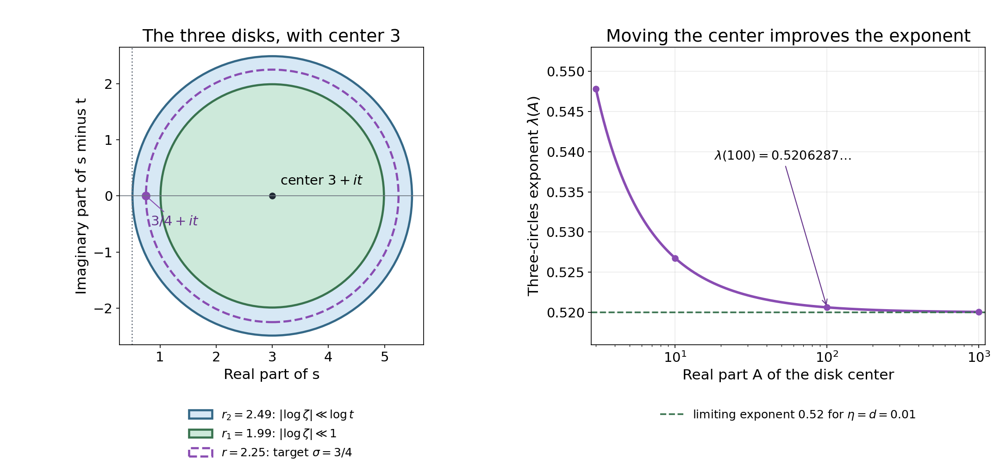

The Riemann hypothesis implies the Lindelöf hypothesis
Written and self-checked by GPT-6.1 Sol (OpenAI) in Codex, Ultra setting, October 2026. Self-check is by the writing AI. Original exposition, proofs and figure sources are public domain (CC0).
The Riemann hypothesis constrains zeros; the Lindelöf hypothesis constrains values. A zero-free region permits a holomorphic logarithm, and interpolation then improves its growth. Obtaining Littlewood's sharper estimate on the critical line requires more: we will retain the constants in a smoothed explicit formula and use the positivity of the zero terms under RH. The same calculation controls the integrated argument and therefore the argument itself. Finally, we prove Backlund's characterization of Lindelöf by local zero counts and the zero-density consequence of Lindelöf.
We use the Euler logarithm and Möbius series from Dirichlet series and Euler products, the Chebyshev estimate $\psi(x)\ll x$ from Counting primes by elementary means, and the gamma estimates from The Gamma function and Stirling's formula. The Hadamard product and Borel–Carathéodory inequality are proved in Entire functions and the Hadamard product, Theorem 2.1 and Corollary 5.2. Convexity and continuity of the growth exponent $\mu$ are proved in Growth in the critical strip, Theorem 3.2. We also use the local partial fractions in Nonvanishing and a zero-free region, Theorem 2.2, the argument normalization and horizontal integral identity in Counting the zeros, Theorems 1.1 and 5.1, and the polynomial mean value and divisor-square bound in Mean values, Theorem 2.1 and (5.1). Every additional analytic estimate used below is proved here.
Write $\rho=\beta+i\gamma$ for nontrivial zeros, with multiplicities, and $N(\sigma,T)=\#\{\rho:\beta\ge\sigma,\ 0<\gamma\le T\}$. RH means that every $\beta=1/2$. LH means that, for every $\varepsilon>0$, $\zeta(1/2+it)\ll_\varepsilon (|t|+4)^\varepsilon$. Statements explicitly assuming RH or LH retain that hypothesis throughout their proofs.
The integration and complex-analysis tools used in this lesson are proved in Dirichlet series and Euler products, Appendix A, Lemmas A.1–A.4.
1. A logarithm in a zero-free half-plane
Assume RH. On the simply connected region $\Re s>1/2$, $\Im s>1$, zeta is holomorphic and nonzero: its pole is outside the region and its zeros are on the boundary. There is therefore a unique holomorphic function $F=\log\zeta$ that agrees with the absolutely convergent Euler logarithm on $\Re s>1$.
Lemma 1.1. For $0<d\le1/4$, $A\ge2$, and $t\ge2A+10$, set $$ c=A+it,\qquad R=A-\tfrac12-d/2,\qquad r=A-\tfrac12-d. $$ Then $$ \max_{|s-c|\le r}|F(s)|\le C(1+A/d)\log t, \tag{1.1} $$ with an absolute $C$.
Proof. The radius-$R$ disk lies strictly in the logarithm's domain. On it, $\Re s\ge1/2+d/2$ and $t/2\le\Im s\le3t/2$. The height truncation from lesson six bounds $|\zeta(s)|$ by $C\sqrt t\log t$ when $1/2\le\Re s\le2$; for larger real parts use the absolute series. Hence $\Re F\le C\log t$. At the center, $|F(c)|\le\log\zeta(A)\le\log\zeta(2)$. Apply Borel–Carathéodory to $F(s)-F(c)$ with $R-r=d/2$ and $r\le A$. This proves (1.1). $\square$
In particular, each fixed $\delta>0$ gives $|\log\zeta(\sigma+it)|\ll_\delta\log t$ uniformly for $1/2+\delta\le\sigma\le2$. The dependence on the distance $d$ has been displayed. Substituting $d=1/\log\log t$ in this estimate alone would increase its upper bound; it would not prove Littlewood's refinement.
2. Three circles and a smaller logarithmic exponent
Theorem 2.1 (Hadamard's three circles). Let $f$ be holomorphic on a neighborhood of $|z|\le R$, and let $M(r)=\max_{|z|=r}|f(z)|$. If $0<r_1<r<r_2\le R$, then $$ M(r)\le M(r_1)^{1-\lambda}M(r_2)^\lambda, \qquad \lambda=\frac{\log(r/r_1)}{\log(r_2/r_1)}. \tag{2.1} $$ Thus $\log M(r)$ is convex as a function of $\log r$.
Proof. If $f\equiv0$, the conclusion is immediate. Otherwise $M(r_1),M(r_2)>0$. Choose real $a,b$ so that $a\log r_j+b=\log M(r_j)$, $j=1,2$. The function $u(z)=\log|f(z)|-a\log|z|-b$ is harmonic away from zeros in the annulus and tends to $-\infty$ at a zero. Its boundary values are at most zero. Remove small disks around its finitely many zeros; on their boundaries $u<0$ when their radii are sufficiently small. The harmonic maximum principle on the remaining compact region gives $u\le0$. Let the deleted radii tend to zero. Taking the maximum on the intermediate circle gives (2.1). The same proof applies when some zeros lie on a boundary, by limits of radii or by the upper semicontinuity of $\log|f|$. $\square$
Theorem 2.2. Under RH, for every fixed $\delta>0$ and $\varepsilon>0$, $$ \log\zeta(\sigma+it)\ll_{\delta,\varepsilon} (\log t)^{2-2\sigma+\varepsilon}, \qquad \tfrac12+\delta\le\sigma\le1, \tag{2.2} $$ for all sufficiently large $t$.
Proof. Empty ranges need no proof. Reduce to $0<\varepsilon\le1$, and put $\eta=\min(1/10,\varepsilon/100)$ and $d=\min(\delta/4,\varepsilon/100)$. Choose a fixed $A\ge\max(10,8/\varepsilon)$. Around $A+it$, take $$ r_1=A-1-\eta,\qquad r_2=A-\tfrac12-d,\qquad r=A-\sigma. \tag{2.3} $$ The inner disk has real parts at least $1+\eta$, so $M_F(r_1)\le\log\zeta(1+\eta)$. Lemma 1.1 bounds $M_F(r_2)$ by $C(1+A/d)\log t$. Also $r_1<r<r_2$. The exponent in three circles satisfies $$ \lambda =\frac{\int_\sigma^{1+\eta}(A-u)^{-1}du} {\int_{1/2+d}^{1+\eta}(A-u)^{-1}du} \le\frac{1+\eta-\sigma}{1/2+\eta-d}\frac A{A-1.1}. $$ Here the first ratio is at most one, and $A/(A-1.1)\le1+2/A$. Moreover $$ \frac{1+\eta-\sigma}{1/2+\eta-d}-2(1-\sigma) =\frac{\eta(2\sigma-1)+2d(1-\sigma)}{1/2+\eta-d} \le3(\eta+d). $$ Consequently $\lambda\le2-2\sigma+\varepsilon$, uniformly in the stated range. Insert the two disk bounds into (2.1). Their constants are fixed once $\delta,\varepsilon$ are fixed, proving (2.2). $\square$
Example 2.3. At $\sigma=3/4$, take $\eta=d=1/100$ and $A=100$. The radii are $98.99,99.25,99.49$, and $$ \lambda=\frac{\log(99.25/98.99)}{\log(99.49/98.99)}\simeq0.52063. $$ Moving the center farther right approaches $(1.01-.75)/(.5+.01-.01)=.52$. Taking $\eta,d$ smaller approaches the exponent $1/2$ in (2.2). The circles control the holomorphic function $\log\zeta$, so the resulting power is a power of $\log t$.

Figure 1. Left: the exact disks (2.3) for $A=3$, $\sigma=3/4$, $\eta=d=.01$, plotted in the translated coordinates $(\Re s,\Im s-t)$. Their radii are $r_1=1.99$, $r=2.25$, $r_2=2.49$; the dotted line is $\Re s=1/2$. Right: the exact formula for $\lambda(A)$, with the same fixed offsets. Its limit is $.52$; the numerical value at $A=100$ agrees with Example 2.3. Decreasing both offsets subsequently gives the limiting exponent $1/2$. Original CC0 figure and reproducible calculation; the curve illustrates the analytic exponent and asserts no numerical information about zeros.
Corollary 2.4. RH implies LH. Under RH, for each fixed $\sigma>1/2$ and each $\varepsilon>0$, both $$ \zeta(\sigma+it)\ll_{\sigma,\varepsilon}|t|^\varepsilon, \qquad \zeta(\sigma+it)^{-1}\ll_{\sigma,\varepsilon}|t|^\varepsilon \quad(|t|\ge2). \tag{2.4} $$
Proof. For $1/2<\sigma\le1$, choose the exponent loss in (2.2) smaller than $2\sigma-1$. Then $|F|=o(\log t)$, and $\exp(\pm\Re F)\le\exp(|F|)\ll_\varepsilon t^\varepsilon$. For $\sigma>1$ the Euler series and its reciprocal give bounded values. Conjugation treats negative heights. Thus $\mu(\sigma)=0$ for every $\sigma>1/2$, using its nonnegativity from lesson six. Its continuity gives $\mu(1/2)=0$, which is LH. $\square$
3. A smoothed logarithmic derivative with its constants
For $X>1$ write $L=\log X$ and define $$ \Lambda_X(n)=\begin{cases} \Lambda(n),&n\le X,\\ \Lambda(n)\log(X^2/n)/L,&X<n\le X^2,\\ 0,&n>X^2, \end{cases} \qquad K_X(w)=\frac{X^{2w}-X^w}{Lw^2}. \tag{3.1} $$ The kernel has a simple pole at zero, of residue one. Put $A(s)=-\zeta'(s)/\zeta(s)$ and $D_X(s)=\sum\Lambda_X(n)n^{-s}$.
Lemma 3.1 (smoothed explicit formula). For $\Re s>1/2$, $\Im s\ge2$, away from zeros, $$ A(s)=D_X(s)-K_X(1-s) +\sum_\rho K_X(\rho-s)+\sum_{k\ge1}K_X(-2k-s). \tag{3.2} $$ Both sums converge absolutely locally away from their indicated singularities. This identity itself does not assume RH.
Proof. On a vertical line $\Re w=c$ with $\Re(s)+c>1$, insert the absolutely convergent series for $A(s+w)$ into $$ \frac1{2\pi i}\int_{(c)}A(s+w) \frac{X^{2w}-X^w}{Lw^2}\,dw. \tag{3.3} $$ The inverse integral of $y^w/w^2$ is $\max(\log y,0)$: close to the right for $y<1$ and to the left for $y>1$, where the residue at zero is $\log y$. At $y=1$ the integral is zero. The integrals are absolutely convergent on the vertical line; horizontal sides vanish by their $w^{-2}$ factor. Subtracting the two kernels gives exactly the coefficients (3.1), so (3.3) equals $D_X(s)$.
Shift the line left. The residues are $A(s)$ at $w=0$, $K_X(1-s)$ at the pole of zeta, and $-K_X(\rho-s)$ at every nontrivial zero. A zero of multiplicity $m$ contributes $-mK_X(\rho-s)$. The trivial zeros contribute $-K_X(-2k-s)$.
Here are bounds justifying the infinite shift. For each fixed left boundary choose horizontal heights tending to infinity at distance at least $c_0/\log U$ from every zero ordinate near their endpoints. The local count from lesson eight makes this possible in each of two unit intervals: the excluded lengths can be made less than one by choosing $c_0$ small. Its local partial fractions give $A=O(\log^2 U)$ on the portions with real parts in a fixed bounded strip. The functional equation and vertical gamma estimates give the same bound on any remaining fixed portions to the left. The horizontal integrals are therefore $O_{X,s,B}(\log^2U/U^2)$ and tend to zero, where $-B$ is the left boundary in the $w$ plane.
Take the left boundaries so that $\Re(s+w)=-2m-1$. They remain uniformly away from the trivial zeros. The functional equation, gamma recurrence and the reflection formula bound $A(s+w)$ there by $C\log(|\Im(s+w)|+m+4)$. Thus their integrals have modulus at most $C_s X^{-B}\log(B+|s|+4)/B$, tending to zero as $B\to\infty$. The zero count $O(\log(|\gamma|+4))$ in unit windows implies absolute convergence of the nontrivial residue sum, whose summands are $O_{X,s}((1+|\gamma|)^{-2})$. The trivial residue sum converges geometrically. Rearrange the resulting equality for $D_X$ to obtain (3.2). $\square$
Assume RH again. For $v>0$ put $$ \mathcal F(v,t)=\sum_\rho\frac{v}{v^2+(t-\gamma)^2}. \tag{3.4} $$ The real partial fractions and Stirling, already proved in lessons three, five and eight, give $$ \Re A(1/2+v+it)=Q(1/2+v+it)-\mathcal F(v,t), \tag{3.5} $$ where $$ Q(s)=\Re\frac1{s-1}-\tfrac12\log\pi +\tfrac12\Re\frac{\Gamma'}{\Gamma}(1+s/2). $$ Uniformly for $0\le v\le1$, $t\ge2$, $Q=\tfrac12\log(t/(2\pi))+O(1)$; in particular $|Q|\le C\log t$.
Lemma 3.2. Suppose $t$ is sufficiently large, $X=\log t$, $L=\log\log t$, and $v_1=1/L$. Then $$ \mathcal F(v_1,t)\ll\log t. \tag{3.6} $$ All constants are absolute.
Proof. Chebyshev's bound and partial summation show, for $j=0,1,2$ and $Y\ge16$, $$ \sum_{2\le n\le Y}\frac{\Lambda(n)}{\sqrt n(\log n)^j} \ll_j\frac{\sqrt Y}{(\log Y)^j}. \tag{3.7} $$ For completeness, the range $n\le\sqrt Y$ contributes $O_j(Y^{1/4})$ by $\psi(u)\ll u$ and partial summation. On $\sqrt Y<n\le Y$ replace $(\log n)^{-j}$ by $O_j((\log Y)^{-j})$ and use $\sum\Lambda(n)/\sqrt n\ll\sqrt Y$. Enlarge the constant for the bounded initial range. This proves (3.7).
At $s_1=1/2+v_1+it$, $|D_X(s_1)|\le C X$. Under RH, $$ \left|\sum_\rho K_X(\rho-s_1)\right| \le\frac{e^{-2}+e^{-1}}L \sum_\rho\frac1{v_1^2+(t-\gamma)^2} =(e^{-2}+e^{-1})\mathcal F(v_1,t). \tag{3.8} $$ The pole term is $O(X/(t^2L))$ since $|1-s_1|\ge t$; the trivial-zero sum is $O(X^{-5/2}/L)$. Combining (3.2), (3.5) and (3.8) gives $$ (1-e^{-1}-e^{-2})\mathcal F(v_1,t) \le C(\log t+X+1). $$ The coefficient on the left is positive: $e^{-1}+e^{-2}<.51$. Since $X=\log t$, this proves (3.6). $\square$
The zero contribution has been absorbed with a fixed coefficient smaller than one. An unspecified constant in (3.8) would not suffice for this step.
4. Littlewood's bounds on the line and for the argument
Theorem 4.1 (Littlewood). Under RH, for all sufficiently large $t$, $$ \log|\zeta(1/2+it)|\le C\frac{\log t}{\log\log t}. \tag{4.1} $$ At a zero the left side is $-\infty$. With the argument branch of lesson ten, $$ |S(t)|\le C\frac{\log t}{\log\log t}, \tag{4.2} $$ including its averaged values at zero ordinates. The constants are absolute.
Proof of (4.1). Keep $X=\log t$, $L=\log\log t$, $v_1=1/L$. On the zero-free horizontal ray, $$ \log\zeta(1/2+v_1+it)=\int_{v_1}^\infty A(1/2+v+it)\,dv. \tag{4.3} $$ Integrate (3.2). The prime term has modulus at most $\sum_{n\le X^2}\Lambda(n)/(\sqrt n\log n)\ll X/L$ by (3.7). For a zero, put $u=Lv$, $q=L(\gamma-t)$. Then $$ \int_{v_1}^\infty|K_X(-v+i(\gamma-t))|dv \le\int_1^\infty\frac{e^{-u}+e^{-2u}}{u^2+q^2}du \le\frac C{1+q^2}. $$ The sum of these bounds is $C\mathcal F(v_1,t)/L$, hence $O(\log t/L)$ by (3.6). The pole term, integrated over the whole ray, is $O(X/(t^2L^2))$, and the trivial terms have an absolutely convergent smaller bound. Thus $$ |\log\zeta(1/2+v_1+it)|\ll\log t/L. \tag{4.4} $$ For $0<v\le v_1$, (3.5) says $\partial_v\log|\zeta|=\mathcal F-Q$. Since $\mathcal F\ge0$, integration gives $$ \log|\zeta(1/2+it)| \le\log|\zeta(1/2+v_1+it)|+C v_1\log t. $$ This holds by a limit at the boundary; at a zero the limit is $-\infty$. Insert (4.4) to obtain (4.1).
Proof of (4.2). We need an extra factor $1/L$ before averaging in height. Define $$ I(t)=\int_{1/2}^\infty\log|\zeta(\sigma+it)|\,d\sigma. $$ We claim $$ |I(t)|\ll\frac{\log t}{L^2}. \tag{4.5} $$ For a nonordinate, horizontal integration of (4.3), now starting at any positive $v$, gives $$ I(t)=\Re\int_0^\infty v A(1/2+v+it)\,dv. \tag{4.6} $$ The weighted prime term in (3.2) is at most $\sum\Lambda(n)/(\sqrt n(\log n)^2)\ll X/L^2$ by (3.7). For a zero, the scaled absolute integral is $$ \int_0^\infty v|K_X(-v+i(\gamma-t))|dv =\frac1L\int_0^\infty \frac{u|e^{-2u+2iq}-e^{-u+iq}|}{u^2+q^2}du \le\frac4{L(1+q^2)}. \tag{4.7} $$ To verify the last inequality when $|q|\ge1$, bound the numerator by $u(e^{-u}+e^{-2u})$ and the denominator below by $q^2$. When $|q|\le1$, use $|e^{-u+iq}-1|\le|-u+iq|$ for $0\le u\le1$: the integral representation $e^z-1=z\int_0^1e^{az}da$ proves this because $\Re z\le0$. The integrand on this range is at most $u/\sqrt{u^2+q^2}\le1$; the remaining range is bounded by an exponential integral. This proves (4.7), also for $q=0$.
Summing (4.7) gives $C\mathcal F(v_1,t)/L^2\ll\log t/L^2$. The weighted pole integral is $O(X/(t^2L^3))$, and the weighted trivial-zero sum is smaller. These estimates justify all changes of integration and summation in (4.6) and prove (4.5). At an ordinate, the local logarithmic singularities are integrable. Equivalently the factor $v$ in (4.6) cancels a boundary pole of $A$. The continuity of $I$, proved in lesson ten, extends (4.5) to these heights.
That lesson also proved the exact identity $$ I(b)-I(a)=\pi\int_a^b S(u)\,du. \tag{4.8} $$ For nonordinates $u\ge t$, monotonicity of $N$ and $N=1+\vartheta/\pi+S$ give $S(u)\ge S(t)-C(u-t)\log t$ on $[t,t+1]$, since $\vartheta'=O(\log t)$. Hence, for $0<h\le1$, $$ S(t)\le\frac1h\int_t^{t+h}S(u)du+C h\log t. $$ The analogous inequality on $[t-h,t]$ bounds $-S(t)$. Take $h=1/L$ and use (4.5) at $t,t-h,t+h$ in (4.8). Both resulting bounds are $O(\log t/L)$. The one-sided limits obey the same bound, so their average does too. This proves (4.2). $\square$
The scales in this proof are explicit: $X=\log t$, the prime polynomial has length $(\log t)^2$, the horizontal offset is $v_1=1/\log\log t$, and the height average has width $h=1/\log\log t$. They give a uniform estimate as the horizontal offset shrinks. The fixed-$\delta$ estimate (2.2) has a different role, providing the qualitative implication by interpolation.
5. Backlund's characterization by local zero counts
This section is unconditional as an equivalence: neither direction assumes RH.
Theorem 5.1 (Backlund). LH holds if and only if, for every fixed $\sigma>1/2$, $$ N(\sigma,T+1)-N(\sigma,T)=o(\log T). \tag{5.1} $$
Proof, from LH to the count. Under LH the strip interpolation in lesson six gives $|\zeta(u+iv)|\ll_\varepsilon (|v|+4)^\varepsilon$ uniformly on each fixed strip $u\ge1/2$. Fix $1/2<\sigma<1$. Choose $A>2$ sufficiently large that $$ r=\sqrt{(A-\sigma)^2+1/4}<A-1/2. $$ Choose a fixed $R$ strictly between these two quantities. Every zero with $\beta\ge\sigma$, $T<\gamma\le T+1$ is in the radius-$r$ disk centered at $A+i(T+1/2)$. The radius-$R$ disk has all real parts greater than $1/2$, and for large $T$ it contains no pole. Jensen's formula bounds the number in the smaller disk by $$ \frac{\log M_\zeta(R)-\log|\zeta(A+i(T+1/2))|}{\log(R/r)}. $$ The center modulus is at least $1/\zeta(A)$ by the reciprocal Euler series. LH makes the numerator at most $\varepsilon\log T+O_{A,\varepsilon}(1)$ for every $\varepsilon>0$. Dividing by $\log T$, taking a limsup and then $\varepsilon\downarrow0$ proves (5.1). For $\sigma\ge1$ the count is zero.
Proof, from the count to LH. Fix $0<\delta<1/10$ and $A\ge4$. At each sufficiently large height $t$, choose a radius $$ A-\tfrac12-\delta\le R\le A-\tfrac12-\delta/2 $$ whose circle contains no zero. There are only finitely many excluded radii. Every zero in this disk has $\beta>1/2+\delta/2$ and $|\gamma-t|\le A$. Covering this height interval by a fixed number of unit windows and applying (5.1) shows that the number $m$ of such zeros, with multiplicities, is $o(\log t)$.
In coordinates $z=s-(A+it)$, let $a_j$ be these zeros. Define their disk Blaschke factors $$ B_j(z)=\omega_j\frac{R(z-a_j)}{R^2-\overline{a_j}z},\qquad |\omega_j|=1, $$ with the rotations chosen so that $B_j(0)>0$. They have modulus one on $|z|=R$ and at most one inside. Their denominators have no pole in the disk, since $|a_j|<R$. Thus $$ h(z)=\zeta(A+it+z)\prod_{j=1}^m B_j(z)^{-1} $$ extends to a holomorphic nonzero function on the closed disk. Choose a logarithm $H=\log h$ with $H(0)=\log\zeta(A+it)-\sum_j\log B_j(0)$, using the Euler logarithm and real logarithms in this expression. Since $|a_j|\ge A-1$, $$ \frac{A-1}{R}\le B_j(0)<1, \qquad |H(0)|\le C_A(1+m)=o(\log t). \tag{5.2} $$ On the outer circle $\Re H=\log|\zeta|\le C_A\log t$ by the unconditional polynomial bound. Borel–Carathéodory therefore gives $$ \max_{|z|\le r_2}|H(z)|\ll_{A,\delta}\log t, \qquad r_2=A-\tfrac12-2\delta. \tag{5.3} $$
Set $r_1=A-1-\delta$. On $|z|\le r_1$ all real parts of $A+it+z$ are at least $1+\delta$, so its Euler logarithm is bounded. Each factor has a logarithm on this smaller disk, agreeing with the real logarithm at zero, and this logarithm is bounded by a constant depending only on $A,\delta$. To see the latter directly, expand $\log(1-z/a_j)$ and $-\log(1-\overline{a_j}z/R^2)$: their ratios have modulus at most $r_1/(A-1)<1$ and $r_1/R<1$, respectively, uniformly in $j,t$. Add the bounded center logarithm. Consequently $$ \max_{|z|\le r_1}|H(z)|\le C_{A,\delta}(1+m)=o(\log t). \tag{5.4} $$ Apply three circles between $r_1$ and $r_2$. For each fixed $\sigma\ge1/2+3\delta$ with $\sigma\le1$, the radius $A-\sigma$ is strictly below $r_2$, so its interpolation exponent is strictly less than one. Equations (5.3)–(5.4) give $H(\sigma-A)=o(\log t)$. Since every $|B_j|\le1$, $$ \log|\zeta(\sigma+it)|\le\Re H(\sigma-A)=o(\log t). $$ This inequality also holds if zeta vanishes at the target point. Thus $\mu(\sigma)=0$ for every such $\sigma$. Letting $\delta$ be any sufficiently small fixed number proves this for every $\sigma>1/2$. Continuity of $\mu$ at $1/2$ then proves LH. $\square$
The local condition uses an $o(\log T)$ count at every sufficiently large height, not merely a small total count up to $T$. Its converse works by removing the few zeros on the right of a fixed line before interpolating a logarithm. There is no assertion here that LH locates each zero on the critical line.
6. Lindelöf implies the density hypothesis
The detector used here will recur in the final lesson with unconditional moment bounds. We include its elementary sampling estimate to account for the fact that zeros are points rather than a continuous mean value.
Lemma 6.1 (sampling and partial sums). Suppose $t_j\in[T,2T]$ are separated by at least one and $P(t)=\sum_{n\le N}b_n n^{-it}$, $N\ge2$. Then $$ \sum_j|P(t_j)|^2\ll (T+N)\log(2N)\sum_{n\le N}|b_n|^2. \tag{6.1} $$ For $P_u(t)=\sum_{n\le u}b_n n^{-it}$, $$ \sum_j\max_{u\le N}|P_u(t_j)|^2 \ll (T+N)\log^3(2N)\sum_{n\le N}|b_n|^2. \tag{6.2} $$
Proof. The intervals $J_j=[t_j-1/4,t_j+1/4]$ have disjoint interiors. The fundamental theorem of calculus gives $$ |P(t_j)|^2\le2\int_{J_j}|P(u)|^2du +2\int_{J_j}|P(u)P'(u)|du. $$ Sum and apply Cauchy–Schwarz. The polynomial mean value from lesson sixteen bounds $\|P\|_2^2$ by $C(T+N)\sum|b_n|^2$ on $[T-1/4,2T+1/4]$, and bounds $\|P'\|_2^2$ by the same expression times $\log^2 N$. This proves (6.1).
Pad the sequence with zeros to a length $2^k<2N$. Any initial interval of integers is the disjoint union of at most $k+1$ binary blocks. Cauchy–Schwarz therefore bounds its polynomial's square by $(k+1)$ times the sum of the squared polynomials over those blocks, and hence over all binary blocks. Apply (6.1) to each block polynomial. At each of the $k+1$ levels the blocks partition the coefficients, so the sum of their coefficient norms is $\sum|b_n|^2$. Since $k+1\ll\log(2N)$, the two extra factors prove (6.2). $\square$
Theorem 6.2 (Ingham's conditional density theorem). Under LH, for every $\varepsilon>0$, $$ N(\sigma,T)\ll_\varepsilon T^{2(1-\sigma)+\varepsilon}, \qquad 1/2\le\sigma\le1,\quad T\ge2. \tag{6.3} $$ This is the density hypothesis. RH would instead give $N(\sigma,T)=0$ for every $\sigma>1/2$.
Proof. It suffices to take $0<\varepsilon<1/2$. If $\sigma\le1/2+\varepsilon/8$, the bound $N(T)\ll T\log T$ from lesson ten already gives (6.3). Suppose $\sigma\ge1/2+\varepsilon/8$, and write $\delta=\varepsilon/8$.
We first count zeros in $T<\gamma\le2T$. Put $X=\lfloor T\rfloor$, $Y=T$, and $$ M_X(s)=\sum_{d\le X}\mu(d)d^{-s},\qquad a(n)=\sum_{\substack{d\mid n\\d\le X}}\mu(d). $$ Then $a(1)=1$, $a(n)=0$ for $2\le n\le X$, and $|a(n)|\le d(n)$. On the absolutely convergent line, Mellin inversion of $e^{-u}$ gives $$ \sum_{n\ge1}a(n)n^{-s}e^{-n/Y} =\frac1{2\pi i}\int_{(2)}\zeta(s+w)M_X(s+w)\Gamma(w)Y^w dw. \tag{6.4} $$ To justify the inversion, put $g(v)=e^{-e^v}e^{cv}$, $c>0$. The gamma integral gives $\Gamma(c+iu)=\int_{\mathbb R}g(v)e^{iuv}dv$. Both $g$ and this transform are integrable, the latter by Stirling. Insert a factor $e^{-h u^2}$ in the inverse integral and interchange the integrals. The Gaussian integral evaluates it as the convolution of $g$ with $(4\pi h)^{-1/2}e^{-v^2/(4h)}$. As $h\downarrow0$ this convolution tends to $g$ at every point, by continuity and the Gaussian approximate-identity estimate. Dominated convergence on the transform side removes the inserted factor. Evaluating at $v=\log(n/Y)$ and dividing by $(n/Y)^c$ proves the inversion used in (6.4).
At a zero $s=\rho$ with $\beta\ge\sigma$, shift (6.4) to $\Re w=1/2-\beta$. This line is between $-1/2$ and $-\delta$. The apparent residue at $w=0$ is $\zeta(\rho)M_X(\rho)=0$. The pole at $w=1-\rho$ contributes $M_X(1)\Gamma(1-\rho)Y^{1-\rho}$, exponentially small in $T$. No negative integer gamma pole is crossed. The horizontal integrals tend to zero by vertical Stirling and the polynomial growth of zeta. Thus $$ e^{-1/Y}+\sum_{n>X}a(n)n^{-\rho}e^{-n/Y} =O(e^{-cT})+\mathcal I_\rho, \tag{6.5} $$ where $$ \mathcal I_\rho=\frac{Y^{1/2-\beta}}{2\pi} \int_{\mathbb R}\Gamma(1/2-\beta+iv)Y^{iv} \zeta(1/2+i(\gamma+v))M_X(1/2+i(\gamma+v))dv. \tag{6.6} $$ Let $N=\lceil T\log^2T\rceil$. The portion $n>N$ in (6.5) is $O(T^{-100})$ for large $T$: use $d(n)\le n$, and compare its exponentially decaying tail with an integral. Hence each zero makes either the polynomial over $X<n\le N$ or $|\mathcal I_\rho|$ at least $1/3$.
Choose a maximal subset of these zeros whose ordinates are separated by at least one, with one representative when several zeros share an ordinate. Every zero is within one of a selected ordinate. The local count from lesson eight shows that the full count, including multiplicities, is at most $C\log T$ times the number of selected points. Divide those points between the two alternatives.
For the polynomial alternative use $b_n=a(n)e^{-n/T}n^{-\sigma}\mathbf1_{n>X}$. Partial summation against the decreasing weight $n^{-(\beta-\sigma)}$ bounds the modulus at $\beta$ by $\max_u|\sum_{n\le u}b_n n^{-i\gamma}|$. The coefficient norm obeys $$ \sum_{X<n\le N}|b_n|^2\ll T^{1-2\sigma}\log^3T. \tag{6.7} $$ Indeed split into $kT<n\le(k+1)T$, $k\ge1$, using $X\asymp T$ for the first segment, $e^{-2n/T}\le e^{-2k}$ thereafter, and $\sum_{n\le u}d(n)^2\ll u\log^3(2u)$ from lesson sixteen. The resulting $k$ sum converges uniformly for $1/2\le\sigma\le1$. Apply (6.2) and $T+N\ll T\log^2T$. The number $R_1$ of polynomial points is $$ R_1\ll T^{2-2\sigma}\log^8T. \tag{6.8} $$
For the integral alternative, Stirling and compactness on the real parts $[-1/2,-\delta]$ give $|\Gamma(1/2-\beta+iv)|\le C_\delta e^{-|v|}$, uniformly in $\beta$. Weighted Cauchy–Schwarz in (6.6) gives $$ |\mathcal I_\rho|^2\le C_\delta T^{1-2\beta} \int_{\mathbb R}e^{-|v|}|\zeta(1/2+i(\gamma+v))M_X(1/2+i(\gamma+v))|^2dv. \tag{6.9} $$ One may decrease the exponential rate slightly to obtain this displayed bound; Stirling actually gives rate $\pi/2>1$, so both its integral and the required comparison are bounded. Under LH, $|\zeta(1/2+iu)|^2\ll_\eta (|u|+4)^{2\eta}$ for any fixed $\eta>0$. On $|v|\le T/2$ this costs $T^{2\eta}$. On the remaining range use $|M_X|\le2\sqrt X$, the unconditional polynomial bound for zeta, and the exponential weight to get a total $O(T^{-100})$ after summing over at most $O(T\log T)$ selected points.
For one-separated ordinates, $\sum_j e^{-|u-\gamma_j|}\le C$: at most a fixed number of them occur in each unit window about $u$. Sum (6.9), change variables to $u=\gamma_j+v$, and apply this bound. The mean value theorem gives $$ \int_{T/2}^{3T}|M_X(1/2+iu)|^2du \ll (T+X)\sum_{n\le X}\frac1n\ll T\log T. $$ Consequently the number of integral points satisfies $R_2\ll_{\delta,\eta}T^{2-2\sigma+2\eta}\log T$.
Restoring the local multiplicity factor gives a bound $C_{\varepsilon,\eta}T^{2-2\sigma+2\eta}\log^9 T$ for the original dyadic count. Take $\eta=\varepsilon/8$ and absorb logarithms with exponent $\varepsilon/4$, so this is $O_\varepsilon(T^{2-2\sigma+\varepsilon/2})$. Sum dyadic height intervals down to a fixed bounded height. Their sum is at most $O(\log T)$ times the largest bound, including when $\sigma$ is close to one; absorb this last logarithm in the remaining exponent $\varepsilon/2$. The finitely many low zeros can be absorbed uniformly. This proves (6.3). $\square$
7. Exercises and complete solutions
Exercise 1 (easy). Show that $\mu(\sigma)=0$ for all $\sigma>1/2$ implies $\mu(1/2)=0$. Explain why a bound only at a single $\sigma>1/2$ would not give the same conclusion.
Solution. The finite convex function $\mu$ is continuous by lesson six. Therefore $\mu(1/2)=\lim_{h\downarrow0}\mu(1/2+h)=0$. One zero value at $1/2+h$ permits a convex function to be positive farther left; for example the unconditional chord bound permits $\mu(1/2)>0$. The quantifier over arbitrarily small $h$ supplies the limiting information.
Exercise 2 (medium). Prove three circles by applying the maximum principle to $\log|f|-a\log|z|$. Identify the treatment of zeros.
Solution. Choose $a=(\log M(r_2)-\log M(r_1))/\log(r_2/r_1)$ and $b=\log M(r_1)-a\log r_1$. Then $\log|f|-a\log|z|-b\le0$ on both boundary circles. This function is harmonic except at zeros, where it tends to $-\infty$. Delete small zero disks, apply the harmonic maximum principle, and let their radii shrink. On the radius-$r$ circle, the resulting bound is $\log M(r)\le a\log r+b$, precisely (2.1). For $f\equiv0$ the inequality is immediate.
Exercise 3 (medium). Under RH prove $1/\zeta(\sigma+it)\ll_{\sigma,\varepsilon}|t|^\varepsilon$ for each fixed $\sigma>1/2$. Specify the branch and its range.
Solution. For $1/2<\sigma\le1$, use the Euler-normalized holomorphic logarithm on $\Re s>1/2$, $\Im s>1$. Choose the loss in (2.2) smaller than $2\sigma-1$, giving $|\log\zeta|=o(\log t)$. Hence $|1/\zeta|=e^{-\Re\log\zeta}\le e^{|\log\zeta|}\ll_\varepsilon t^\varepsilon$. On $\sigma>1$ use the absolutely convergent Möbius series. Conjugation treats negative heights. This gives the fixed-line assertion; uniformity on $\sigma\ge\sigma_0>1/2$ follows either from the uniform estimate on $[\sigma_0,1]$ or from lesson fourteen, Theorem 3.2. At one the reciprocal has a removable zero rather than a pole.
Exercise 4 (medium). Deduce from Exercise 3 and Perron's formula that RH implies $M(x)\ll_\varepsilon x^{1/2+\varepsilon}$.
Solution. It suffices to take $0<\varepsilon<1/2$. Let $y=\lfloor x\rfloor+1/2$, $T=y$, $a=1+1/\log y$, $b=1/2+\varepsilon/4$. The bounded-coefficient Perron estimate in The classical error term, Lemma 3.1, gives $$ M(x)=\frac1{2\pi i}\int_{a-iT}^{a+iT}\frac{y^s}{s\zeta(s)}ds+O(y\log y/T). $$ RH permits shifting to $b$ with no residue; $1/\zeta$ is holomorphic across one. The uniform reciprocal bound from Exercise 3, with exponent $\varepsilon/4$, bounds the vertical integral by $C_\varepsilon y^b\int_0^T(t+4)^{\varepsilon/4}/(b+t)dt\ll_\varepsilon y^{1/2+\varepsilon/2}$. The two horizontal integrals are at most $C_\varepsilon T^{\varepsilon/4-1}\int_b^a y^\sigma d\sigma\ll_\varepsilon y^{\varepsilon/4}/\log y$. The truncation error is $O(\log y)$. They are all $O_\varepsilon(x^{1/2+\varepsilon})$ after enlarging the constant for bounded $x$. The half-integer cutoff has exactly the integers $n\le x$ below it, so no jump correction is needed. This is also the exact forward proof in lesson fourteen, Theorem 4.1.
Exercise 5 (hard). Under RH prove $S(T)\ll\log T/\log\log T$, using the argument normalization of lesson ten.
Solution. Use the smoothed kernel (3.1), $X=\log T$ and $L=\log\log T$. Equations (3.5)–(3.8) give $\mathcal F(1/L,T)\ll\log T$, with the positive coefficient $1-e^{-1}-e^{-2}$ retained. Weighted horizontal integration (4.6) gives $|I(T)|\ll\log T/L^2$: the prime sum is bounded by (3.7) with $j=2$, and (4.7) makes the full zero contribution at most $C\mathcal F(1/L,T)/L^2$. Pole and trivial terms are smaller. Monotonicity of $N$ bounds $S(T)$ above by its average over $[T,T+1/L]$ plus $O(\log T/L)$, and bounds it below using $[T-1/L,T]$. The exact relation $\pi\int_a^bS=I(b)-I(a)$ bounds each average by $O(\log T/L)$. This proves the assertion at nonordinates. Its two limiting values satisfy the same estimate, so their prescribed average does as well. The complete kernel estimates and boundary justification are in Theorem 4.1.
Freely readable sources and attribution
- C. T. McMullen, Advanced Complex Analysis, freely readable Harvard lecture notes, 30 November 2023, Theorem 3.5, printed page 75: three circles. The annulus proof is supplied in Theorem 2.1 here.
- D. Koukoulopoulos, The Distribution of Prime Numbers, freely readable author preliminary version, Lemma 8.5. The real-part inequality used here is proved in lesson five.
- R. C. Vaughan, Analytic Number Theory, Chapter 10 lecture notes, freely supplied by the author, Exercises 20–21, printed pages 321–323: the Backlund characterization and Littlewood converse compared with the complete proof in Section 5.
- H. L. Montgomery and R. C. Vaughan, Multiplicative Number Theory III, freely readable author-hosted 367-page draft, Chapters 24, 26 and 28: growth, moments and density comparisons. Sections 3–6 here prove the contour, interpolation, sampling and zero-count arguments used in this lesson.
- A. Connes, The Riemann Hypothesis: Past, Present and a Letter Through Time, freely readable arXiv v1 survey, subsection “The Lindelöf Hypothesis”: context for the growth exponents.
Littlewood’s conditional bounds are proved in Theorem 4.1. The exposition, proofs, solutions and figure source in this lesson are CC0. The figure checks its elementary interpolation formula; it supplies no proof of RH, LH or an all-height zero assertion.